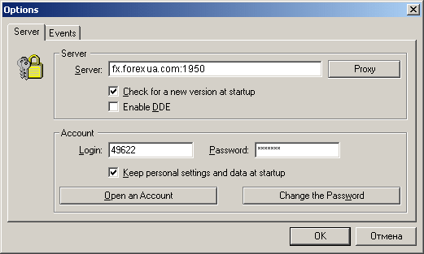

Установка
клиентского терминала MetaTrader и открытие
демо-счета
Установка клиентского терминала
MetaTrader и открытие демо-счета
Для установки программы скачайте ее с нашего сайта и запустите файл mtsetup.exe. В окне программы установки будет
предложено выбрать язык:
После выбора языка текст программы установки и
клиентского терминала MetaTrader преобразуется в выбранный. Кнопка "Next >" выведет на экран окно программы установки с
предупреждением о закрытии всех Windows-приложений и ответственности за
нелегальное копирование.
После нажатия кнопки "Next
>" на экране появится окно, содержащее лицензионное соглашение.
Прочитав лицензионное соглашение и в случае, если вы согласны c его
положениями, необходимо отметить флажком "Yes, I agree
with all the terms of this license agreement", в противном случае
процесс установки не будет продолжен.
После нажатия кнопки "Next
>" на экране появится окно, предлагающее выбрать каталог
установки.
Внимание: Под одной операционной системой
Microsoft Windows можно установить несколько клиентских терминалов
MetaTrader, для каждого используя отдельный каталог и отдельную группу
(группа в меню "Пуск - > Программы")!
Затем появляется окно выбора группы в меню
"Программы".
Кнопка "Next >" выведет
на экран окно с предупреждением о готовности к установке клиентского
терминала MetaTrader.
После нажатия кнопки "Next
>" появится следующее окно, отражающее состояние процесса
установки торгового терминала:
Внимание: В случае установки клиентского
терминала MetaTrader в каталог, где была установлена предыдущая версия
клиентского терминала MetaTrader, все настройки, счета и данные предыдущей
версии сохраняются!
После завершения установки на экране появляется
окно подтверждения успешного завершения установки.
После нажатия кнопки "Finish" выполнение программы установки
завершается.
Внимание: Программа установки клиентского
терминала MetaTrader выводит на рабочий стол ярлык клиентского терминала
MetaTrader, позволяющий запускать клиентский терминал!
После установки программы во время первого запуска
Вам будет предложено открыть демо-счет.
Демонстрационный счет позволяет Вам поработать в
тренировочном режиме с выбранным сервером, а также оценить качество связи
с сервером. Демонстрационный счет не предполагает реальной торговли, но
при этом производится учет ваших торговых операций. Это позволяет более
качественно, чем на бумаге, отработать Вашу торговую стратегию. Для
открытия демонстрационного счета необходимо заполнить все поля реальными
данными. В противном случае демо-счет может быть удален администратором.
При заполнении формы Вы можете выбрать величину кредитного плеча (Leverage). Также в поле "Deposit" можно указать размер начального депозита.
Наиболее разумным является указание суммы, близкой к той, которую вы
планируете использовать на реальном счете. Также вы обязаны поставить
галочку "Я согласен с тем, что мой e-mail будет добавлен в список
рассылки" (I accept to subscribe into your news
letters). В противном случае кнопка Register будет неактивна. Нажмите кнопку "Register". В случае успешной регистрации демо-счета
появится окно с логином и паролем.
Если
регистрация нового демо-счета прошла неуспешно, то появится сообщение
"невозможно открыть счет".
В
этом случае рекомендуется проверить связь с интернетом и проверить настройки клиентского терминала. Открыть демо-счет
можно путем выбора меню "Tools - > Options", с помощью комбинации клавиш "Ctrl-O" или путем нажатия на кнопку  :
:

Появится окно:

Выберите Open an Account.
Открыть счет также можно из окна "Навигатора" (Navigator),
выбрав раздел "Счета" (Accounts), нажав правую
кнопку мыши и выбрав из контекстного меню "Open an
Account"
Открытие демо-счета завершается появлением в окне
"Navigator" в папке "Accounts" номера открытого счета и имени пользователя,
а в окне "Terminal" в разделе "Trade" появляется строка с финансовыми реквизитами
открытого счета и клиентский терминал MetaTrader переходит к обслуживанию
открытого счета.
Демонстрационные счета имеют одинаковые возможности
с реальными счетами.
Внимание: В одном клиентском терминале
MetaTrader можно открыть несколько демо-счетов.
Содержание Далее